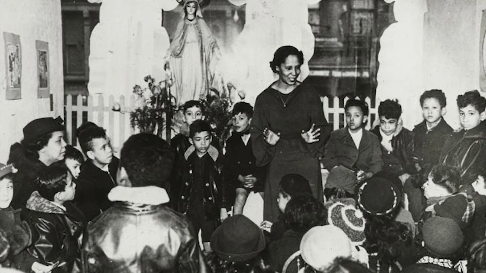

Thu Sep 17 · Launch
Whose stories
do we hear?
Pura Belpré’s library work offers a way to think about access and belonging.
Matchbook Morning Meeting · Heritage & BelongingGrades 6–8 · 01
Thu Sep 17 · Regulate
Ready to listen
1Feel your feet
2Take an easy breath
3Let your shoulders rest
Choose a comfortable way to settle. Let your attention return to the group.
Matchbook Morning Meeting · Heritage & BelongingGrades 6–8 · 02
Thu Sep 17 · Orient
Pura Belpré: librarian & storyteller
New York Public Library · 1921
Belpré became its first Puerto Rican librarian.
Puerto Rican stories
Her storytelling and published folktales reached children.
Matchbook Morning Meeting · Heritage & BelongingGrades 6–8 · 03
Thu Sep 17 · Watch & notice
Pura Belpré: A library heritage tour

Watch the opening 2 minutes of the 3:49 tour.
What connection can you make between Belpré’s work and access to stories today?
Matchbook Morning Meeting · Heritage & BelongingGrades 6–8 · 04
Thu Sep 17 · Connect
A connection to consider
Our conversation
What changes when readers encounter a familiar experience or a new perspective in a book?
Think first. Share with a partner if you choose. Listen to the whole response.
Matchbook Morning Meeting · Heritage & BelongingGrades 6–8 · 05
Thu Sep 17 · Practice
Room for another story
A class display features only one kind of story about Hispanic and Latino communities.
Look closely
Whose work and experiences are visible?
Expand thoughtfully
Propose a specific voice or question to explore.
Our task
Design a display addition. Explain what students would learn and where you would look.
Matchbook Morning Meeting · Heritage & BelongingGrades 6–8 · 06
Thu Sep 17 · Commit
One action today
My commitment
To make room for another voice, I will ___.
Choose an action someone could notice. You can say it, write it, or draw it.
Matchbook Morning Meeting · Heritage & BelongingGrades 6–8 · 07
Thu Sep 17 · Transition
Carry it into our day
Before we move on
Connect one fact about Belpré to a concrete action our class could take.
1Keep your commitment
2Prepare your materials
3Begin the next task
Matchbook Morning Meeting · Heritage & BelongingGrades 6–8 · 08